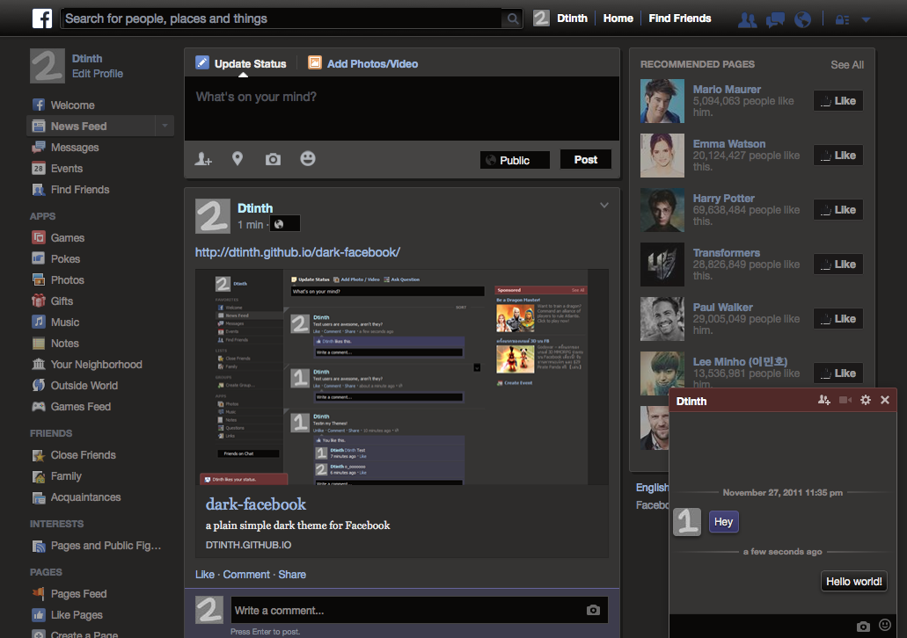

dark-facebook
just a plain simple dark theme for Facebook

install in
Stylish
(recommended)
Install
Stylish
for Firefox / Chrome.
Install the
dark-facebook Userstyle
Comments and ratings
welcome! :)
install in
Social Fixer
Install
Social Fixer
for Firefox, Chrome, Safari, Opera or Greasemonkey.
Use the following theme URL:
https://dark-facebook.appspot.com/dark-facebook.css
Changelog